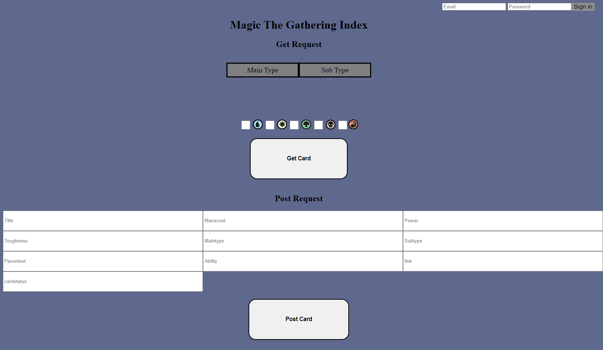
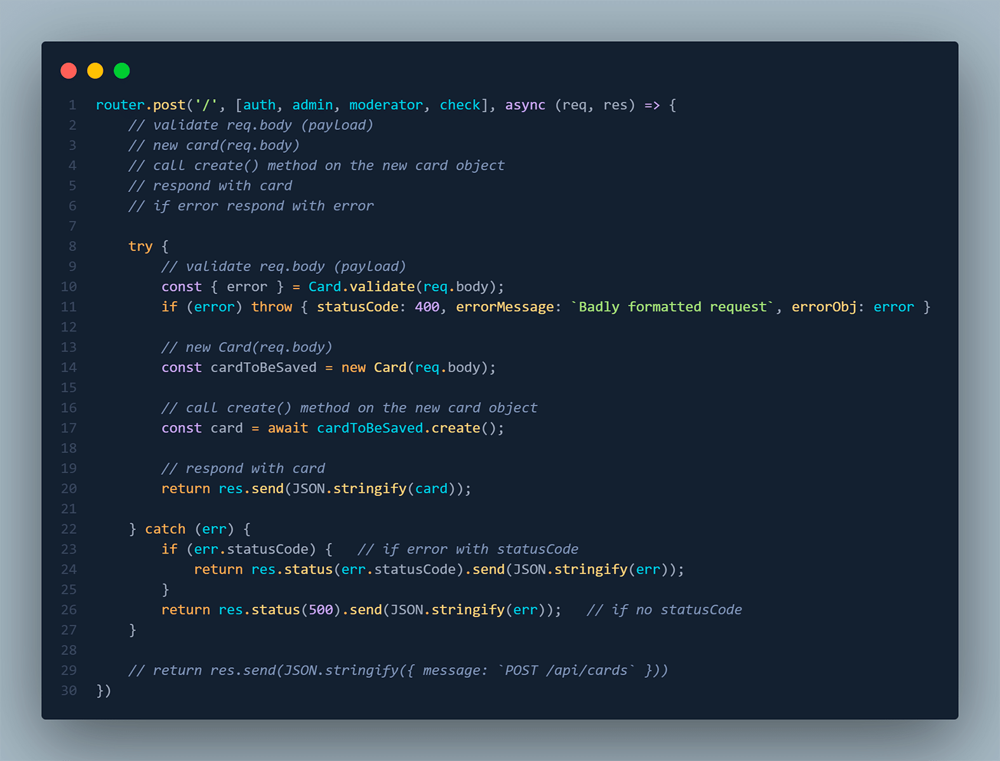
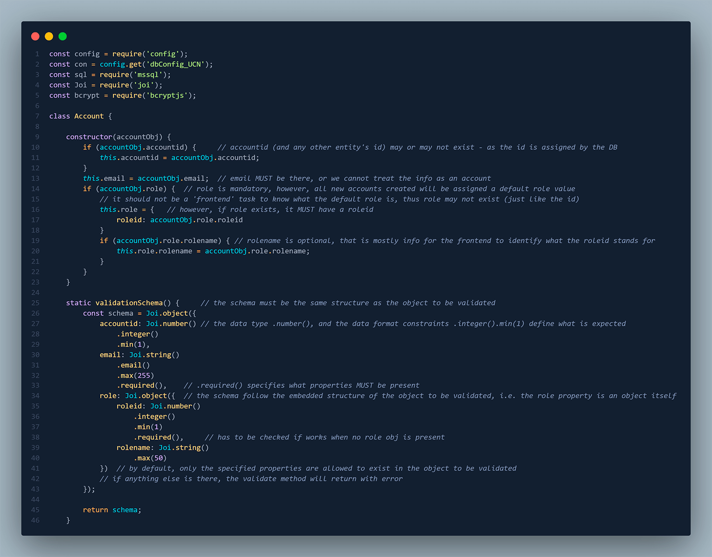

API - Magic The Gathering Index
Udvikling af API backend logik med kobling til frontend som del af valgfag på 2.semester.

Casebeskrivelse
Projektet var del af et valgfag i udvikling af Web API'er med udgangspunkt i et Magic The Gathering bibliotek.
API'er er en naturlig del af webudvikling. Det var derfor relevant at arbejde med en selvbygget API for at forstå hvordan backend logik bygges og eksekveres. Gennem valgfaget har jeg opnået bedre indsigt i hvad API'er kan bruges til, som del af et frontend design.
Designprocessen
Den indledende proces byggede i høj grad på at forstå hvordan backend logikken bør repræsenteres visuelt. En simpel frontend blev udarbejdet for at akkomodere API'ens funktionalitet. Hovedfokus var på Backend, hvorfor frontend løsningen blot skulle være en funktionel prototype.
Ud fra frontend mockup er det tydeligt, at der skal være en form for filtrering af søgekriterier, såvel som en mulighed for at tilføje nye kort til MTG index. Noget funktionalitet er ligeledes gemt bag login, som bør autoriseres og valideres.
Realisering
Løsningen bygger på CRUD konventioner inden for HTTP requests såvel som database manipulation i MSSQL. For at understøtte alle request typer, var det derfor essentielt at udarbejde routing til API'ens endpoints. Et uddrag af en route, som tager autorisering og rolletildeling som parametre for validering via middleware viser opbygningen af et request.
En stor del af opgaven lå i at udarbejde logikken bag API'en via modules. Dels bør løsningen håndtere CRUD principper for kortene i vores index, men der bør også være brugerlogin som kan håndtere og verificere data. Et module til at håndtere accounts blev derfor udarbejdet.
Takeaways
En stor del af opgaven lå i at forstå strukturen af API'er og selv udarbejde backend logikken. For at overholde konventioner om sikre digitale systemer var det nødvendigt at brugere kunne valideres hvis de ville tilgå endpoints som var låst bag autorisering. Ligeledes blev udveksling mellem databasen og brugerindput udforsket og håndteret gennem et module for kortene. Denne opgave har givet indsigt i hvordan et API projekt kan tackles og hvilke muligheder der ligger i en velbygget API for formidling og udveksling af data.